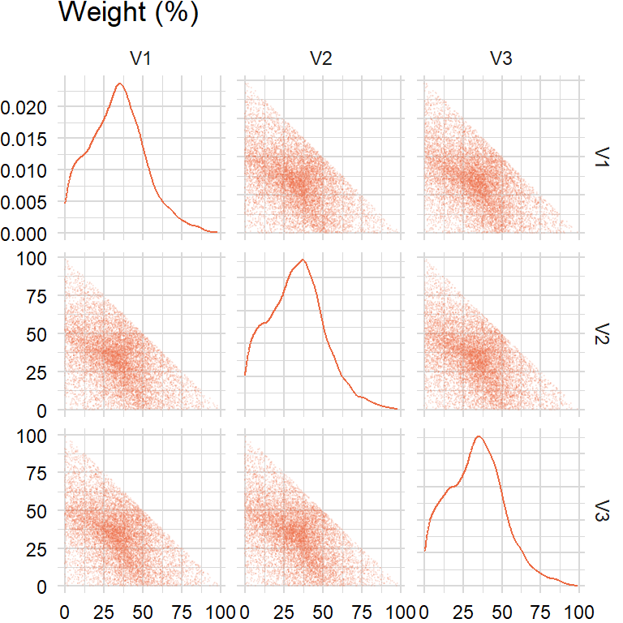

factors_r <- c("SP500", "DTWEXAFEGS") # "SP500" does not contain dividends; note: "DTWEXM" discontinued as of Jan 2020
factors_d <- c("DGS10", "BAMLH0A0HYM2")Random weights
Need to generate uniformly distributed weights \(\mathbf{w}=(w_{1},w_{2},\ldots,w_{N})\) such that \(\sum_{j=1}^{N}w_{i}=1\) and \(w_{i}\geq0\):
Approach 1: tempting to use \(w_{i}=\frac{u_{i}}{\sum_{j=1}^{N}u_{i}}\) where \(u_{i}\sim U(0,1)\) but the distribution of \(\mathbf{w}\) is not uniform
Approach 2: instead, generate \(\text{Exp}(1)\) and then normalize
Can also scale random weights by \(M\), e.g. if sum of weights must be 10% then multiply weights by 10%.
rand_weights1 <- function(n_sim, n_assets) {
rand_exp <- matrix(runif(n_sim * n_assets), nrow = n_sim, ncol = n_assets)
result <- rand_exp / rowSums(rand_exp)
return(result)
}n_assets <- 3
n_sim <- 10000approach1 <- rand_weights1(n_sim, n_assets)
Approach 2(a): uniform sample from the simplex (http://mathoverflow.net/a/76258) and then normalize
- If \(u\sim U(0,1)\) then \(-\ln(u)\) is an \(\text{Exp}(1)\) distribution
This is also known as generating a random vector from the symmetric Dirichlet distribution.
rand_weights2a <- function(n_sim, n_assets, lmbda) {
# inverse transform sampling: https://en.wikipedia.org/wiki/Inverse_transform_sampling
rand_exp <- matrix(-log(1 - runif(n_sim * n_assets)) / lmbda, nrow = n_sim, ncol = n_assets)
result <- rand_exp / rowSums(rand_exp)
return(result)
}lmbda <- 1approach2a <- rand_weights2a(n_sim, n_assets, lmbda)
Approach 2(b): directly generate \(\text{Exp}(1)\) and then normalize
rand_weights2b <- function(n_sim, n_assets) {
rand_exp <- matrix(rexp(n_sim * n_assets), nrow = n_sim, ncol = n_assets)
result <- rand_exp / rowSums(rand_exp)
return(result)
}approach2b <- rand_weights2b(n_sim, n_assets)Random turnover
How to generate random weights between lower bound \(a\) and upper bound \(b\) that sum to zero?
Approach 1: tempting to multiply random weights by \(M\) and then subtract by \(\frac{M}{N}\) but the distribution is not between \(a\) and \(b\)
Approach 2: instead, use an iterative approach for random turnover:
- Generate \(N-1\) uniformly distributed weights between \(a\) and \(b\)
- For \(u_{N}\) compute sum of values and subtract from \(M\)
- If \(u_{N}\) is between \(a\) and \(b\), then keep; otherwise, discard
Then add random turnover to previous period’s random weights.
rand_turnover1 <- function(n_sim, n_assets, lower, upper, target) {
rng <- upper - lower
result <- rand_weights2b(n_sim, n_assets) * rng
result <- result - rng / n_assets
return(result)
}lower <- -0.05
upper <- 0.05
target <- 0approach1 <- rand_turnover1(n_sim, n_assets, lower, upper, target)rand_iterative <- function(n_assets, lower, upper, target) {
result <- runif(n_assets - 1, min = lower, max = upper)
temp <- target - sum(result)
while (!((temp <= upper) && (temp >= lower))) {
result <- runif(n_assets - 1, min = lower, max = upper)
temp <- target - sum(result)
}
result <- append(result, temp)
return(result)
}rand_turnover2 <- function(n_sim, n_assets, lower, upper, target) {
result_ls <- list()
for (i in 1:n_sim) {
result_sim <- rand_iterative(n_assets, lower, upper, target)
result_ls <- append(result_ls, list(result_sim))
}
result <- do.call(rbind, result_ls)
return(result)
}approach2 <- rand_turnover2(n_sim, n_assets, lower, upper, target)Mean-variance
geometric_mean <- function(x, scale) {
result <- prod(1 + x) ^ (scale / length(x)) - 1
return(result)
}- https://www.adrian.idv.hk/2021-06-22-kkt/
- https://or.stackexchange.com/a/3738
- https://bookdown.org/compfinezbook/introFinRbook/Portfolio-Theory-with-Matrix-Algebra.html#algorithm-for-computing-efficient-frontier
- https://palomar.home.ece.ust.hk/MAFS6010R_lectures/slides_robust_portfolio.html
tickers <- "BAICX" # fund inception date is "2011-11-28" returns_x_xts <- na.omit(returns_xts)[ , factors] # extended history
mu <- apply(returns_x_xts, 2, geometric_mean, scale = scale[["periods"]])
sigma <- cov(overlap_x_xts) * scale[["periods"]] * scale[["overlap"]]Maximize mean
\[ \begin{aligned} \begin{array}{rrcl} \displaystyle\min&-\mathbf{w}^{T}\mu\\ \textrm{s.t.}&\mathbf{w}^{T}e&=&1\\ &\mathbf{w}^T\Sigma\mathbf{w}&\leq&\sigma^{2}\\ \end{array} \end{aligned} \]
To incorporate these conditions into one equation, introduce new variables \(\lambda_{i}\) that are the Lagrange multipliers and define a new function \(\mathcal{L}\) as follows:
\[ \begin{aligned} \mathcal{L}(\mathbf{w},\lambda)&=-\mathbf{w}^{T}\mu-\lambda_{1}(\mathbf{w}^{T}e-1) \end{aligned} \]
Then, to minimize this function, take derivatives with respect to \(w\) and Lagrange multipliers \(\lambda_{i}\):
\[ \begin{aligned} \frac{\partial\mathcal{L}(\mathbf{w},\lambda)}{\partial w}&=-\mu-\lambda_{1}e=0\\ \frac{\partial\mathcal{L}(\mathbf{w},\lambda)}{\partial \lambda_{1}}&=\mathbf{w}e^T-1=0 \end{aligned} \]
Simplify the equations above in matrix form and solve for the Lagrange multipliers \(\lambda_{i}\):
\[ \begin{aligned} \begin{bmatrix} -\mu & e \\ e^{T} & 0 \end{bmatrix} \begin{bmatrix} \mathbf{w} \\ -\lambda_{1} \end{bmatrix} &= \begin{bmatrix} 0 \\ 1 \end{bmatrix} \\ \begin{bmatrix} \mathbf{w} \\ -\lambda_{1} \end{bmatrix} &= \begin{bmatrix} -\mu & e \\ e^{T} & 0 \end{bmatrix}^{-1} \begin{bmatrix} 0 \\ 1 \end{bmatrix} \end{aligned} \]
max_mean_optim <- function(mu, sigma, target) {
params <- CVXR::Variable(length(mu))
obj <- CVXR::Maximize(t(params) %*% mu)
cons <- list(sum(params) == 1, params >= 0,
CVXR::quad_form(params, sigma) <= target ^ 2)
prob <- CVXR::Problem(obj, cons)
result <- CVXR::solve(prob)$getValue(params)
return(result)
}target <- 0.06params1 <- t(max_mean_optim(mu, sigma, target))
params1 [,1] [,2] [,3] [,4]
[1,] 0.3475922 0.1302538 0.5221538 1.870625e-07params1 %*% mu [,1]
[1,] 0.03578793sqrt(params1 %*% sigma %*% t(params1)) [,1]
[1,] 0.06# # install.packages("devtools")
# devtools::install_github("jasonjfoster/rolloptim") # roll (>= 1.1.7)
# library(rolloptim)
#
# mu <- roll_mean(returns_x_xts, 5)
# sigma <- roll_cov(returns_x_xts, width = 5)
#
# xx <- roll_crossprod(returns_x_xts, returns_x_xts, 5)
# xy <- roll_crossprod(returns_x_xts, returns_y_xts, 5)
#
# roll_max_mean(mu)Minimize variance
\[ \begin{aligned} \begin{array}{rrcl} \displaystyle\min&\frac{1}{2}\mathbf{w}^T\Sigma\mathbf{w}\\ \textrm{s.t.}&\mathbf{w}^{T}e&=&1\\ &\mu^{T}\mathbf{w}&\geq&M\\ \end{array} \end{aligned} \]
To incorporate these conditions into one equation, introduce new variables \(\lambda_{i}\) that are the Lagrange multipliers and define a new function \(\mathcal{L}\) as follows:
\[ \begin{aligned} \mathcal{L}(\mathbf{w},\lambda)&=\frac{1}{2}\mathbf{w}^{T}\Sigma\mathbf{w}-\lambda_{1}(\mathbf{w}^{T}e-1) \end{aligned} \]
Then, to minimize this function, take derivatives with respect to \(w\) and Lagrange multipliers \(\lambda_{i}\):
\[ \begin{aligned} \frac{\partial\mathcal{L}(\mathbf{w},\lambda)}{\partial w}&=\mathbf{w}\Sigma-\lambda_{1}e=0\\ \frac{\partial\mathcal{L}(\mathbf{w},\lambda)}{\partial \lambda_{1}}&=\mathbf{w}e^T-1=0 \end{aligned} \]
Simplify the equations above in matrix form and solve for the Lagrange multipliers \(\lambda_{i}\):
\[ \begin{aligned} \begin{bmatrix} \Sigma & e \\ e^{T} & 0 \end{bmatrix} \begin{bmatrix} \mathbf{w} \\ -\lambda_{1} \end{bmatrix} &= \begin{bmatrix} 0 \\ 1 \end{bmatrix} \\ \begin{bmatrix} \mathbf{w} \\ -\lambda_{1} \end{bmatrix} &= \begin{bmatrix} \Sigma & e \\ e^{T} & 0 \end{bmatrix}^{-1} \begin{bmatrix} 0 \\ 1 \end{bmatrix} \end{aligned} \]
min_var_optim <- function(mu, sigma, target) {
params <- CVXR::Variable(length(mu))
obj <- CVXR::Minimize(CVXR::quad_form(params, sigma))
cons <- list(sum(params) == 1, params >= 0,
sum(mu * params) >= target)
prob <- CVXR::Problem(obj, cons)
result <- CVXR::solve(prob)$getValue(params)
return(result)
}target <- 0.03params2 <- t(min_var_optim(mu, sigma, target))
params2 [,1] [,2] [,3] [,4]
[1,] 0.2928362 0.1186198 0.588544 -1.232115e-20params2 %*% mu [,1]
[1,] 0.03sqrt(params2 %*% sigma %*% t(params2)) [,1]
[1,] 0.05042907# roll_min_var(sigma)Maximize utility
\[ \begin{aligned} \begin{array}{rrcl} \displaystyle\min&\frac{1}{2}\delta(\mathbf{w}^{T}\Sigma\mathbf{w})-\mu^{T}\mathbf{w}\\ \textrm{s.t.}&\mathbf{w}^{T}e&=&1\\ \end{array} \end{aligned} \]
To incorporate these conditions into one equation, introduce new variables \(\lambda_{i}\) that are the Lagrange multipliers and define a new function \(\mathcal{L}\) as follows:
\[ \begin{aligned} \mathcal{L}(\mathbf{w},\lambda)&=\frac{1}{2}\mathbf{w}^{T}\Sigma\mathbf{w}-\mu^{T}\mathbf{w}-\lambda_{1}(\mathbf{w}^{T}e-1) \end{aligned} \]
Then, to minimize this function, take derivatives with respect to \(w\) and Lagrange multipliers \(\lambda_{i}\):
\[ \begin{aligned} \frac{\partial\mathcal{L}(\mathbf{w},\lambda)}{\partial w}&=\mathbf{w}\Sigma-\mu^{T}-\lambda_{1}e=0\\ \frac{\partial\mathcal{L}(\mathbf{w},\lambda)}{\partial \lambda_{1}}&=\mathbf{w}e^T-1=0 \end{aligned} \]
Simplify the equations above in matrix form and solve for the Lagrange multipliers \(\lambda_{i}\):
\[ \begin{aligned} \begin{bmatrix} \Sigma & e \\ e^{T} & 0 \end{bmatrix} \begin{bmatrix} \mathbf{w} \\ -\lambda_{1} \end{bmatrix} &= \begin{bmatrix} \mu^{T} \\ 1 \end{bmatrix} \\ \begin{bmatrix} \mathbf{w} \\ -\lambda_{1} \end{bmatrix} &= \begin{bmatrix} \Sigma & e \\ e^{T} & 0 \end{bmatrix}^{-1} \begin{bmatrix} \mu^{T} \\ 1 \end{bmatrix} \end{aligned} \]
max_utility_optim <- function(mu, sigma, target) {
params <- CVXR::Variable(length(mu))
obj <- CVXR::Minimize(0.5 * target * CVXR::quad_form(params, sigma) - t(mu) %*% params)
cons <- list(sum(params) == 1, params >= 0)
prob <- CVXR::Problem(obj, cons)
result <- CVXR::solve(prob)$getValue(params)
return(result)
}ir <- 0.5
target <- ir / 0.06 # ir / std (see Black-Litterman)params3 <- t(max_utility_optim(mu, sigma, target))
params3 [,1] [,2] [,3] [,4]
[1,] 0.417415 0.1451334 0.4374516 4.188069e-24params3 %*% mu [,1]
[1,] 0.04316819sqrt(params3 %*% sigma %*% t(params3)) [,1]
[1,] 0.07224351# roll_max_utility(mu, sigma)Minimize residual sum of squares
\[ \begin{aligned} \begin{array}{rrcl} \displaystyle\min&\frac{1}{2}\delta(\mathbf{w}^{T}X^{T}X\mathbf{w})-X^{T}y\mathbf{w}\\ \textrm{s.t.}&\mathbf{w}^{T}e&=&1\\ \end{array} \end{aligned} \]
To incorporate these conditions into one equation, introduce new variables \(\lambda_{i}\) that are the Lagrange multipliers and define a new function \(\mathcal{L}\) as follows:
\[ \begin{aligned} \mathcal{L}(\mathbf{w},\lambda)&=\frac{1}{2}\mathbf{w}^{T}X^{T}X\mathbf{w}-X^{T}y\mathbf{w}-\lambda_{1}(\mathbf{w}^{T}e-1) \end{aligned} \]
Then, to minimize this function, take derivatives with respect to \(w\) and Lagrange multipliers \(\lambda_{i}\):
\[ \begin{aligned} \frac{\partial\mathcal{L}(\mathbf{w},\lambda)}{\partial w}&=\mathbf{w}X^{T}X-X^{T}y-\lambda_{1}e=0\\ \frac{\partial\mathcal{L}(\mathbf{w},\lambda)}{\partial \lambda_{1}}&=\mathbf{w}e^T-1=0 \end{aligned} \]
Simplify the equations above in matrix form and solve for the Lagrange multipliers \(\lambda_{i}\):
\[ \begin{aligned} \begin{bmatrix} X^{T}X & e \\ e^{T} & 0 \end{bmatrix} \begin{bmatrix} \mathbf{w} \\ -\lambda_{1} \end{bmatrix} &= \begin{bmatrix} X^{T}y \\ 1 \end{bmatrix} \\ \begin{bmatrix} \mathbf{w} \\ -\lambda_{1} \end{bmatrix} &= \begin{bmatrix} X^{T}X & e \\ e^{T} & 0 \end{bmatrix}^{-1} \begin{bmatrix} X^{T}y \\ 1 \end{bmatrix} \end{aligned} \]
min_rss_optim1 <- function(mu, sigma) {
params <- CVXR::Variable(length(mu))
obj <- CVXR::Minimize(0.5 * CVXR::quad_form(params, sigma) - t(mu) %*% params)
cons <- list(sum(params) == 1, params >= 0)
prob <- CVXR::Problem(obj, cons)
result <- CVXR::solve(prob)$getValue(params)
return(result)
}params4 <- t(min_rss_optim1(crossprod(overlap_x_xts, overlap_y_xts), crossprod(overlap_x_xts)))
params4 [,1] [,2] [,3] [,4]
[1,] 0.2777089 -2.105969e-23 0.1087466 0.6135446params4 %*% mu [,1]
[1,] 0.03193048sqrt(params4 %*% sigma %*% t(params4)) [,1]
[1,] 0.05917959# roll_min_rss(xx, xy)min_rss_optim2 <- function(x, y) {
params <- CVXR::Variable(ncol(x))
obj <- CVXR::Minimize(CVXR::sum_squares(y - x %*% params))
cons <- list(sum(params) == 1, params >= 0)
prob <- CVXR::Problem(obj, cons)
result <- CVXR::solve(prob)$getValue(params)
return(result)
}params5 <- t(min_rss_optim2(zoo::coredata(overlap_x_xts), zoo::coredata(overlap_y_xts)))
params5 [,1] [,2] [,3] [,4]
[1,] 0.2777089 -8.978014e-21 0.1087466 0.6135446params5 %*% mu [,1]
[1,] 0.03193048sqrt(params5 %*% sigma %*% t(params5)) [,1]
[1,] 0.05917959round(data.frame(
"max_pnl" = t(params1) * 100,
"min_risk" = t(params2) * 100,
"max_utility" = t(params3) * 100,
"min_rss1" = t(params4) * 100,
"min_rss2" = t(params5) * 100),
2) max_pnl min_risk max_utility min_rss1 min_rss2
1 34.76 29.28 41.74 27.77 27.77
2 13.03 11.86 14.51 0.00 0.00
3 52.22 58.85 43.75 10.87 10.87
4 0.00 0.00 0.00 61.35 61.35